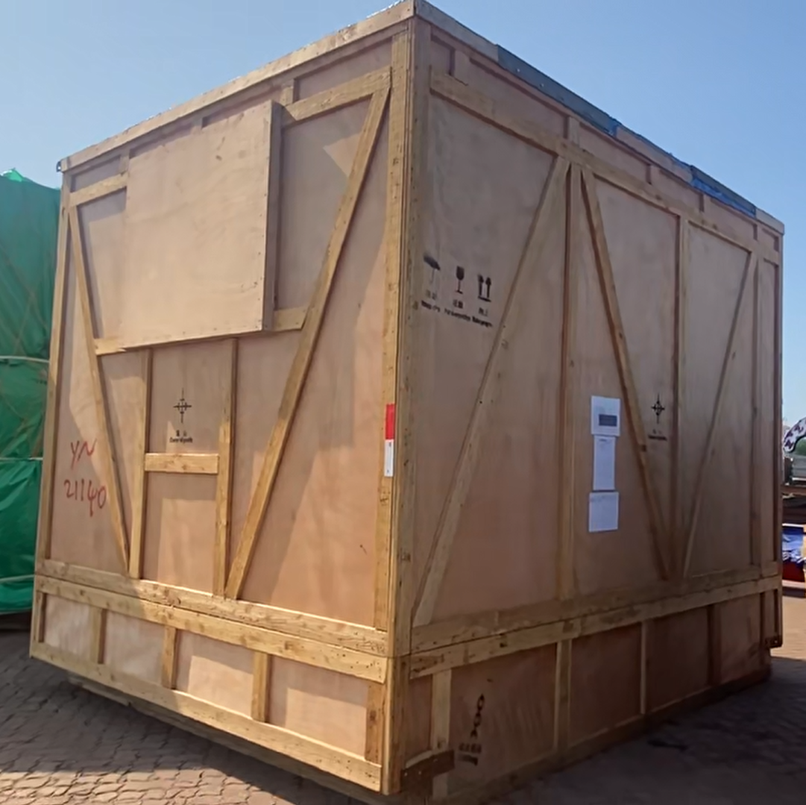
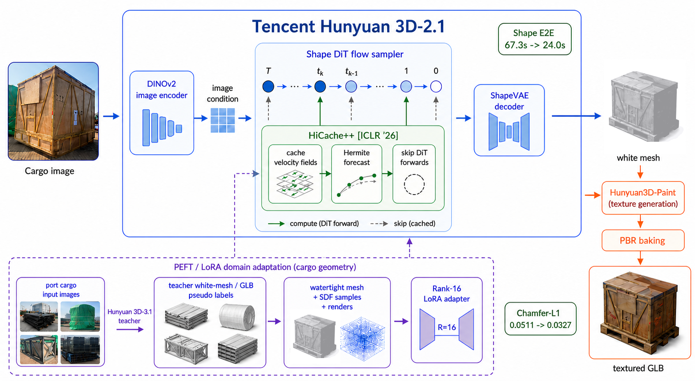
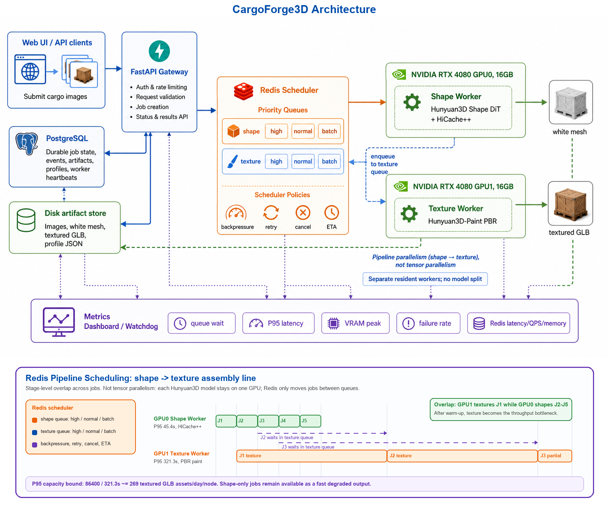

吊装触发后的快速占位
港口现场不一定先等纹理。白膜可以先用于包围盒估计、孪生场景占位、后续尺度对齐和资产入库，纹理阶段再异步补齐。
港口数字孪生 Mesh 资产生成
CargoForge3D 将港口现场采集的货物图像转换为可入库、可预览、可导入数字孪生平台的 GLB/PBR 三维资产。 项目以开源 Hunyuan3D-2.1 为基础，完成 Windows 本地化适配、HiCache++ 白膜推理加速、双 RTX4080 异步推理调度， 并通过教师模型伪标签和 Rank-16 LoRA 微调增强件杂货场景的几何重建能力。

业务动机
件杂货码头的实际需求是把现场货物快速转成数字孪生系统中的可用资产，服务于资产归档、吊装仿真、场景可视化和尺度还原。 因此系统必须覆盖采集、分割、重建、尺度校准、资产导出、任务审计和资源监控，而不是只跑通一次单图生成。
港口现场不一定先等纹理。白膜可以先用于包围盒估计、孪生场景占位、后续尺度对齐和资产入库，纹理阶段再异步补齐。
单张 RTX4080 16GB 可以稳定跑白膜，但 shape 与 texture 同进程同显卡容易显存不足。因此必须把两个阶段拆开并常驻不同 GPU。
Hunyuan3D-2.1 对港口长条钢构、堆叠管束、覆盖货物和异形件杂货的先验不足，需要用领域数据和教师模型蒸馏提升几何质量。
系统蓝图
这个项目不是把 Hunyuan3D 跑起来就结束，而是把每个阶段都工程化：输入是什么，输出是什么，占用哪块硬件， 如何记录状态，失败后如何恢复，以及如何用指标证明系统容量。
输入来自港口现场相机、手机、云台或吊装事件触发采集。目标不是实验室棚拍，而是在真实堆场背景中获得可重建的货物图像。
输出：原始图像、采集元信息、可选尺度参考。背景剔除和图像筛选用于降低地面、车辆、货架、天空等干扰，让模型关注货物主体，而不是把港口环境也重建进去。
输出：source condition 图像和清理后的输入图像。GPU0 运行 Hunyuan3D-2.1 shape pipeline，并接入 HiCache++。白膜是业务上第一个可用结果，可用于孪生占位和尺度对齐。
输出：白膜 Mesh、包围盒、面数统计、shape profile。GPU1 运行低显存 PBR 纹理管线。纹理阶段耗时长、显存重，因此单独作为第二级队列，避免阻塞白膜吞吐。
输出：带纹理 Mesh、PBR 贴图、texture profile。系统把 GLB/OBJ、贴图、预览图和 profile.json 放入统一 job 目录，并把 artifact 元信息写入 PostgreSQL。
输出：可下载 GLB 和可审计资产记录。运行时指标、排队时间、P95 延迟、显存峰值、失败率、mesh 统计和 LoRA 验证指标共同反馈到系统调优。
输出：Dashboard 指标和训练/评测记录。一个 Demo 只能说明模型能跑一次；CargoForge3D 说明的是如何把生成式三维模型适配到受限工业场景： 显存有限、纹理耗时长、多请求并发、任务可恢复、吞吐可量化、特定领域几何可微调。
基础模型
本项目把 Hunyuan3D-2.1 拆成两个工程阶段理解：第一阶段是单图白膜生成，第二阶段是基于白膜的 PBR 纹理生成和 GLB 打包。

针对官方工程偏 Linux 的问题，修复 CUDA 设备绑定、TorchVision 兼容、本地 HuggingFace/hy3dgen 模型路径、 动态模块缓存、纹理管线设备硬编码和 shape/texture 显存释放等问题，使其能在 Windows 双 4080 工作站稳定运行。
Hunyuan3D-2.1 仍然是单图白膜生成模型。本项目不宣称实现多视角白膜生成；双 GPU 是工程上的阶段并行， 不是把同一个 DiT 模型强行拆到两张卡上做张量并行。
输入图像先被编码为视觉条件，shape DiT 在 latent shape feature 上进行迭代式流匹配采样； 采样完成后，shape VAE 解码 latent 表征，网格提取模块再将其转换为白膜 Mesh。对港口业务而言， 这一阶段决定货物轮廓、粗拓扑、尺寸比例和是否足够可信地进入孪生场景。
纹理管线会从白膜渲染法线、位置等几何条件视图，再通过 paint model 生成多视角纹理图， 最后进行反投影、PBR 烘焙和 GLB 打包。它慢的原因不是单一 UNet，而是扩散推理、渲染、补洞、 纹理融合和导出链路叠加。
白膜和纹理在业务上代表不同价值。白膜偏运营，可以先用于占位、包围盒和尺度校准；纹理偏归档和展示， 用于提升可识别性。拆分后，系统可以先返回中间可用结果，而不是等完整 PBR 链路结束。
技术点一
港口业务中，白膜越快出来，越早能完成孪生占位、包围盒估计和后续尺度校准。HiCache++ 针对 shape 阶段的 DiT 采样循环， 通过历史速度场缓存和外推减少完整前向次数。
在刷新步正常执行 DiT 前向，在缓存步用历史轨迹预测下一状态，减少最昂贵的网络调用。这个优化不改变业务输入输出， 适合先生成白膜占位、后续再补纹理的港口流水线。
HiCache++ 插在 shape 采样循环内部，不改 VAE、不改网格提取、不改纹理模型和渲染器。 这样下游仍然接收同样类型的 latent 输出，服务接口和资产导出格式不会改变。
并发服务默认以 hicache 模式启动 shape worker，并暴露 shape acceleration 参数。 本地脚本中 HiCache++ 采用 cache interval 3、history length 5；DMD 保留为实验选项，但不作为稳定服务默认。
加速不是只看秒数，还要同时看采样耗时、白膜端到端耗时、显存峰值、面数/顶点数、水密性、 视觉质量，以及该白膜是否还能稳定进入纹理生成和数字孪生占位流程。
技术点二
这个系统的核心不是“用了 Redis”，而是把 Hunyuan3D 的长耗时、重显存 Pipeline 变成可排队、可审计、可恢复、可压测的服务。

任务状态包含 submitted、queued shape、running shape、queued texture、running texture、packing、completed、 failed、cancelled 和 retrying。每次状态迁移都会落 PostgreSQL event，便于追踪失败原因。
纹理是瓶颈阶段。系统显示 backlog 和 ETA，并通过优先级队列、排队上限和降级策略避免请求无限堆在 Redis 中。
Worker 持续写心跳，watchdog 检测 stale worker 和僵尸任务；停止脚本支持优雅退出、队列清理和未完成任务丢弃，避免显存长期被占用。
当前能够启动 Redis 并发服务的本地主目录为：
D:\tencent Hunyuan3D-2.1(new version)\Hunyuan3D-2.1-main\Hunyuan3D-2.1-main启动脚本会检查 Hunyuan3D conda Python、8091 端口、Redis 6379、PostgreSQL、GPU 空闲显存， 然后启动白膜 worker、纹理 worker、watchdog 和 FastAPI。
powershell.exe -ExecutionPolicy Bypass -File "D:\tencent Hunyuan3D-2.1(new version)\Hunyuan3D-2.1-main\Hunyuan3D-2.1-main\start_hy3d_concurrent.ps1"Redis 只做队列，PostgreSQL 存长期状态，包括 job、event、artifact、profile、worker heartbeat 和用户限额。 这样服务异常后能恢复，也能给 Dashboard 提供可靠的数据源。
Logs: C:\Users\admin\Documents\New project\hy3d_concurrent_logs
Jobs: C:\Users\admin\Documents\New project\hy3d_concurrent_jobs
UI: http://127.0.0.1:8091技术点三
Hunyuan3D-3.1 效果更强但不可本地开源部署，因此本项目把它作为教师模型，生成件杂货图像对应的高质量 GLB 伪标签， 再把 GLB 转换为 Hunyuan3D-2.1 shape LoRA 可训练的数据格式。
每个样本会生成 geometry arrays、水密 OBJ、多视角 render conditions、source_condition.png、mesh.ply 和 transforms.json。 这一步把官网下载的 GLB 变成 Hunyuan3D-2.1-mesh-quality 项目可直接读取的训练样本。
训练使用 bf16、DINOv2-Large、Hunyuan3D-2.1 DiT 权重、LoRA rank 16、alpha 16、dropout 0.05、 TensorBoard loss 曲线、周期性 adapter 保存和 100 step 间隔验证。
LoRA 只更新 shape 模型中的部分线性投影，基础模型大部分冻结。目标不是记住某一个货物， 而是让模型更偏向港口领域几何：长条钢构、堆叠货物、大平面结构和异形工业件。
港口真实三维扫描成本高，难以大规模采集。更强的商业模型可以提供可扩展伪监督， 但这些 GLB 不直接当作真值，而是先过滤、清洗、水密化、采样和校验后再用于训练。
验证不只看 loss。Chamfer-L1 和 F-score 衡量几何对齐，GLB 可视化检查用于发现数值指标掩盖不了的失败模式， 例如细长结构塌陷、工业边缘过度平滑或局部几何粘连。
交互式结果
页面把白膜和带纹理结果分开展示。面试时可以直接说明：白膜质量、纹理可行性、显存峰值、耗时 profile 和 GLB 打包是分阶段评估的。
LoRA 可视化检查
LoRA 结果不是只看 loss 曲线，还要看验证样本的几何形态。这里保留可旋转 GLB，便于检查不同 checkpoint 的形状变化。
代码地图
项目产出
CargoForge3D 覆盖现场采集、目标分割、白膜加速、低显存纹理生成、GLB/PBR 导出、任务审计、压测指标和领域微调。 项目面向烟台港件杂货数字孪生资产生成需求设计，重点解决真实港口场景中的吞吐、显存、鲁棒性和领域适配问题。